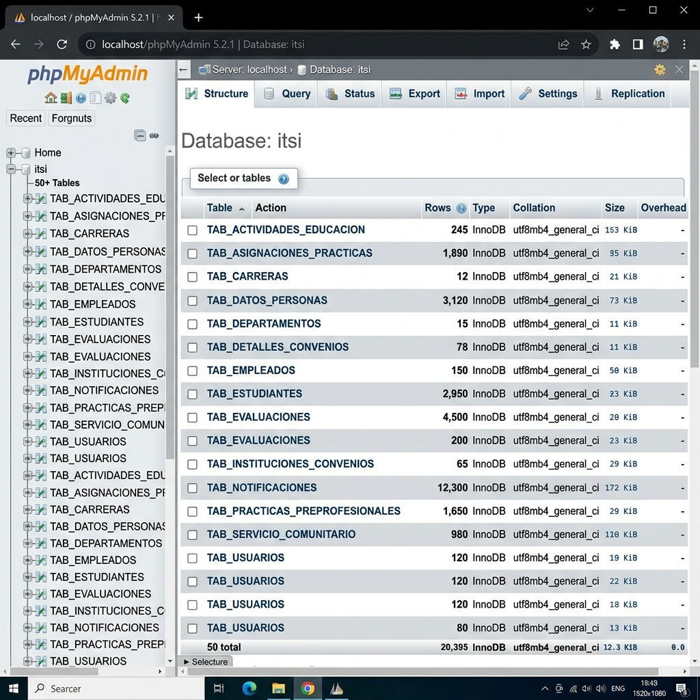
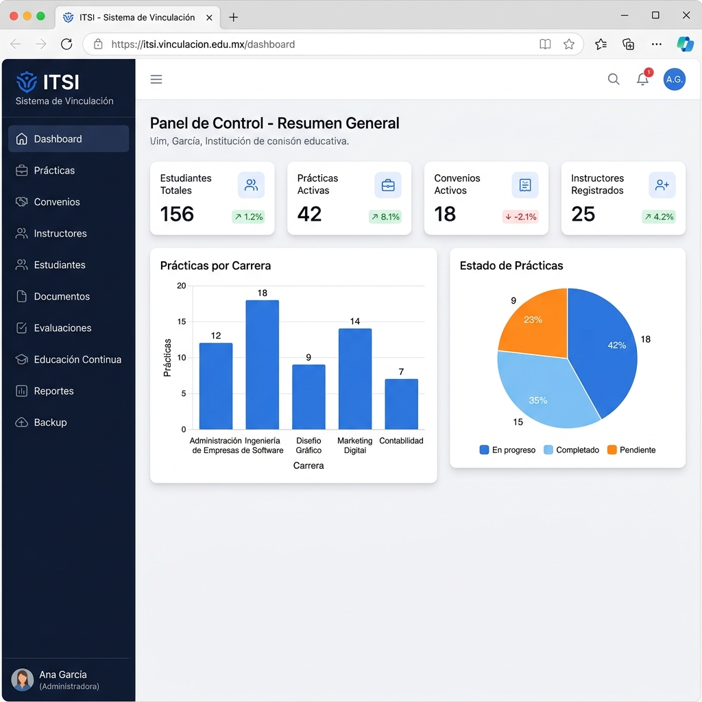

| Componente | Mínimo | Recomendado |
|---|---|---|
| Procesador | Dual Core 2.0 GHz | Quad Core 2.5 GHz+ |
| Memoria RAM | 4 GB | 8 GB |
| Espacio en Disco | 500 MB (sin contar XAMPP) | 2 GB |
| Conexión a Internet | Requerida para instalación | Banda ancha |
| Software | Versión Requerida | Propósito |
|---|---|---|
| Sistema Operativo | Windows 10/11 (64-bit) | Sistema operativo base |
| XAMPP | 8.1 o superior | Servidor web (Apache + MySQL + PHP) |
| PHP | 8.1 o superior | Lenguaje de programación (incluido en XAMPP) |
| MySQL / MariaDB | 5.7+ / 10.4+ | Base de datos (incluido en XAMPP) |
| Composer | 2.x | Gestor de dependencias de PHP |
| Navegador Web | Chrome 90+ / Firefox 90+ / Edge | Acceso al sistema |
Las siguientes extensiones deben estar habilitadas en php.ini (la mayoría vienen activas por defecto en XAMPP):
| Extensión | Uso en el Sistema |
|---|---|
curl | Solicitudes HTTP externas |
gd | Procesamiento de imágenes |
intl | Internacionalización y formateo |
mbstring | Manejo de cadenas multibyte (UTF-8) |
mysqli | Conexión a base de datos MySQL |
openssl | Cifrado y conexiones SMTP seguras |
zip | Manejo de archivos comprimidos |
Descargar XAMPP desde https://www.apachefriends.org/
Seleccionar la versión con PHP 8.1 o superior para Windows.
Ejecutar el instalador y seleccionar los componentes:
Instalar en la ruta por defecto: C:\xampp
Al finalizar, abrir el Panel de Control de XAMPP y verificar que Apache y MySQL se puedan iniciar.
Descargar desde https://getcomposer.org/download/
Ejecutar el instalador. Cuando pregunte la ruta de PHP, seleccionar: C:\xampp\php\php.exe
Verificar la instalación abriendo una terminal (CMD o PowerShell):
composer --versionDebe mostrar algo como: Composer version 2.x.x
Si se desea clonar el proyecto desde un repositorio, instalar Git desde git-scm.com.
# Opción A: Clonar con Git
cd C:\xampp\htdocs
git clone [URL_DEL_REPOSITORIO] ITSI
# Opción B: Copiar manualmente
# Descomprimir o copiar la carpeta del proyecto en C:\xampp\htdocs\ITSIC:\xampp\htdocs\ITSI para que la URL http://localhost/ITSI/public/ funcione correctamente.
Abrir una terminal (CMD o PowerShell) y ejecutar:
cd C:\xampp\htdocs\ITSI
composer installEste comando descargará e instalará automáticamente:
| Dependencia | Versión | Función |
|---|---|---|
codeigniter4/framework | ^4.0 | Framework MVC principal |
tecnickcom/tcpdf | ^6.10 | Generación de documentos PDF |
phpoffice/phpspreadsheet | ^5.0 | Generación de archivos Excel/CSV |
composer install --ignore-platform-reqs como último recursoDespués de ejecutar composer install, verificar que se creó la carpeta vendor/ con las dependencias:
dir C:\xampp\htdocs\ITSI\vendorDebe mostrar carpetas como codeigniter4, tecnickcom, phpoffice, entre otras.
El archivo .env se encuentra en la raíz del proyecto. Abrir con un editor de texto y verificar las siguientes configuraciones:
# Para desarrollo:
CI_ENVIRONMENT = development
# Para producción:
# CI_ENVIRONMENT = productionapp.baseURL = 'http://localhost/ITSI/public/'/ y debe coincidir exactamente con la ubicación del proyecto. Si cambia la carpeta, actualice esta URL.
La configuración se encuentra en app/Config/Database.php. Los valores por defecto son:
public array $default = [
'hostname' => 'localhost',
'username' => 'root',
'password' => '', // XAMPP por defecto no tiene contraseña
'database' => 'itsi',
'DBDriver' => 'MySQLi',
'charset' => 'utf8mb4',
'DBCollat' => 'utf8mb4_general_ci',
'port' => 3306,
];.env descomentando las líneas correspondientes.
La carpeta writable/ debe tener permisos de escritura. En Windows con XAMPP, esto generalmente funciona sin cambios. Si experimenta errores de escritura:
# En la carpeta del proyecto, verificar que writable/ existe
dir C:\xampp\htdocs\ITSI\writablehttp://localhost/phpmyadminEn phpMyAdmin, clic en "Nueva" en el panel lateral izquierdo
En el campo "Nombre de la base de datos" escribir: itsi
En "Cotejamiento" seleccionar: utf8mb4_general_ci
Clic en el botón "Crear"
Seleccionar la base de datos itsi en el panel izquierdo
Ir a la pestaña "Importar" en la parte superior
Clic en "Seleccionar archivo" y buscar: C:\xampp\htdocs\ITSI\bddITSI.sql
Verificar que el formato sea "SQL" y el conjunto de caracteres sea "utf-8"
Clic en "Importar" y esperar a que se complete el proceso
TAB_. El mensaje de éxito indicará que la importación se realizó correctamente.

| Tabla | Descripción |
|---|---|
TAB_USUARIOS | Credenciales de acceso al sistema |
TAB_DATOS_PERSONAS | Información personal (nombre, cédula, email) |
TAB_ESTUDIANTES | Datos específicos del estudiante |
TAB_EMPLEADOS | Datos de empleados/docentes |
TAB_PRACTICAS_PREPROFESIONALES | Prácticas preprofesionales |
TAB_SERVICIO_COMUNITARIO | Servicio comunitario |
TAB_INSTITUCIONES_CONVENIOS | Instituciones con convenio |
TAB_DETALLES_CONVENIOS | Detalles de convenios |
TAB_NOTIFICACIONES | Notificaciones del sistema |
TAB_ACTIVIDADES_EDUCACION | Actividades de educación continua |
Abrir el Panel de Control de XAMPP
Clic en "Start" junto a Apache → el indicador debe ponerse verde
Clic en "Start" junto a MySQL → el indicador debe ponerse verde
Abrir el navegador web (Chrome, Firefox o Edge)
Navegar a la URL: http://localhost/ITSI/public/
Deberá ver la pantalla de inicio de sesión del sistema:
El sistema maneja tres roles diferentes, cada uno con su propio panel:
| Rol | Panel de Acceso | Funciones Principales |
|---|---|---|
| Coordinador | /coord/dashboard | Gestión completa del departamento de vinculación |
| Docente | /docente/dashboard | Tutoría de prácticas y actividades educativas |
| Estudiante | /estudiante/dashboard | Registro de prácticas, documentos y actividades |

El sistema utiliza SMTP para enviar correos de recuperación de contraseña y notificaciones. Esta configuración es opcional pero recomendada.
Acceder a la Cuenta de Google → Seguridad → Verificación en dos pasos (activar si no está activa)
Ir a Contraseñas de aplicación y generar una contraseña para "Correo"
Editar el archivo .env y descomentar/configurar las líneas de correo:
email.protocol = smtp
email.SMTPHost = smtp.gmail.com
email.SMTPPort = 587
email.SMTPCrypto = tls
email.fromEmail = tu_correo@gmail.com
email.fromName = Sistema de Vinculación
email.SMTPUser = tu_correo@gmail.com
email.SMTPPass = xxxx_xxxx_xxxx_xxxxemail.protocol = smtp
email.SMTPHost = smtp.office365.com
email.SMTPPort = 587
email.SMTPCrypto = tls
email.fromEmail = tu_correo@outlook.com
email.fromName = Sistema de Vinculación
email.SMTPUser = tu_correo@outlook.com
email.SMTPPass = tu_contraseña| Problema | Causa Probable | Solución |
|---|---|---|
| Página en blanco | Error PHP oculto | Revisar writable/logs/log-YYYY-MM-DD.log. Asegurar CI_ENVIRONMENT = development en .env |
| Error 404 Not Found | mod_rewrite deshabilitado | En C:\xampp\apache\conf\httpd.conf, descomentar: LoadModule rewrite_module modules/mod_rewrite.so. Reiniciar Apache. |
| Error de conexión a BD | MySQL inactivo o credenciales incorrectas | Verificar que MySQL esté activo en XAMPP. Revisar Database.php (nombre de BD: itsi, usuario: root) |
| No envía correos | SMTP no configurado | Configurar credenciales SMTP en .env. Verificar contraseña de aplicación de Gmail. |
| Error al subir archivos | Permisos de escritura | Verificar que writable/ y public/uploads/ tengan permisos de escritura. |
| Composer install falla | PHP no está en el PATH | Agregar C:\xampp\php al PATH del sistema. Reiniciar terminal. |
| Puerto 80 ocupado | Skype, IIS u otro servicio | Cerrar el servicio que usa el puerto o cambiar el puerto de Apache en httpd.conf. |
| Error de extensión PHP | Extensión deshabilitada | En C:\xampp\php\php.ini, buscar la extensión y quitar el ; al inicio de la línea. |
| CSS/JS no carga | URL base incorrecta | Verificar app.baseURL en .env coincida con la ubicación real del proyecto. |
| Error CSRF token | Sesión expirada | Recargar la página. Verificar configuración de sesiones en Session.php. |
Los logs del sistema se almacenan en writable/logs/. Para ver el log más reciente:
# En PowerShell:
Get-Content "C:\xampp\htdocs\ITSI\writable\logs\log-$(Get-Date -Format 'yyyy-MM-dd').log" -Tail 50Use esta lista para verificar que todos los pasos se completaron correctamente:
C:\xampp\htdocs\ITSIcomposer installvendor/ creada correctamente.env configurado (CI_ENVIRONMENT, app.baseURL)writable/ con permisos de escrituraitsi creada en phpMyAdminutf8mb4_general_cibddITSI.sql importado exitosamente (~50 tablas)Database.phphttp://localhost/ITSI/public/